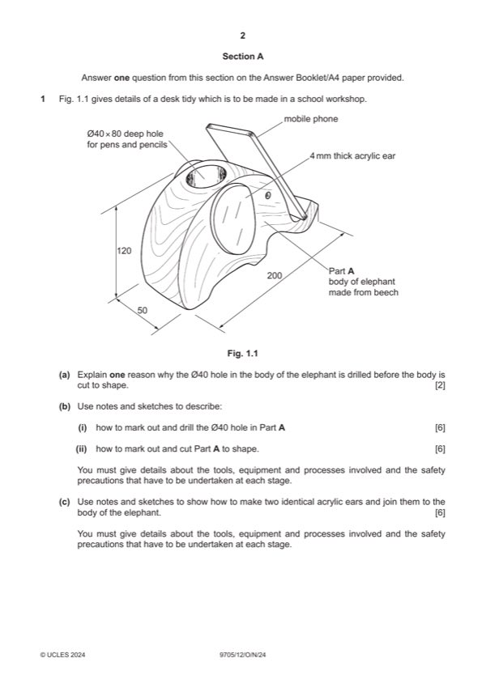

Question 1

Original paper page 2
Part 1(a) — solution
Because it is easier to hold [1] in a vice. [1] 2 AOVR
0–2 Easier to mark out [1] if top has not been
shaped. [1]
Mark points
- Include the ideas shown in the solution above.
Part 1(b)(i) — solution
Notes and/or sketches show: 6
Process of drilling the hole explained [0–3]
Tools and equipment for marking the position of the hole e.g. Marking and
drilling holes, pencil try square, rule and then drilling the hole e.g. pillar drill,
forstner bit [0–2]
Safety precaution when drilling the hole e.g. wear eye protection when using a
pillar drill, work secured in a vice [0–1]
0–6
Mark points
- Include the ideas shown in the solution above.
Part 1(b)(ii) — solution
Notes and/or sketches show: 6
Process of making the elephant shape explained [0–3]
Tools and equipment for marking out the elephant shape e.g. pencil, try
square, template and cutting the elephant shape e.g. bandsaw, file/rasp,
glasspaper, [0–2]
Safety precaution when making the elephant shape e.g. wear eye protection
when using a bandsaw, hold work securely [0–1]
0–6
Mark points
- Include the ideas shown in the solution above.
Part 1(c) — solution
Notes and/or sketches show: 6 Accept CAD/CAM
Process of making and joining the elephant ear explained, templates [0–3] Accept relevant glue
Tools and equipment for making two identical elephant ears e.g. felt tipped
pen, bandsaw, wet and dry, brasso and attaching the elephant ear e.g.
double-sided tape, screw [0–2]
Safety precaution when making the elephant ear e.g. wear eye protection
when using a bandsaw, hold work securely [0–1]
0–6
University Press & Assessment 2024 Page 4 of 16
9705/12 Cambridge International AS & A Level – Mark Scheme October/November 2024
Guidance
Mark points
- Include the ideas shown in the solution above.